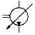
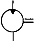
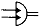
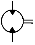
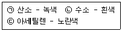

굴삭기운전기능사 (2004-07-18 기출문제)
1. 기관의 피스톤이 고착되는 원인으로 맞지 않는 것은?
- 기관오일이 너무 많았을 때
- 피스톤 간극이 적을 때
- 기관오일이 부족하였을 때
- 기관이 과열되었을 때
(정답률: 64%)

2. 디젤기관의 장점이 아닌 것은?
- 가속성이 좋고 운전이 정숙하다.
- 열효율이 높다.
- 화재의 위험이 적다.
- 연료소비율이 낮다.
(정답률: 74%)
3. 디젤기관의 진동 원인이 아닌 것은?
- 분사시기의 불균형
- 분사량의 불균형
- 프로펠러 샤프트의 불균형
- 분사압력의 불균형
(정답률: 75%)
4. 건설기계 장비로 현장에서 작업시 엔진 부조가 발생하기 시작했다. 다음 중 점검 사항으로 가장 적합한 것은?
- 냉각계통을 점검한다.
- 연료계통을 점검한다.
- 윤활계통을 점검한다.
- 충전계통을 점검한다.
(정답률: 65%)
5. 디젤기관의 노킹 발생 원인으로 가장 거리가 먼 것은?
- 노즐의 분무상태가 불량하다.
- 기관이 과냉되어 있다.
- 착화기간 중 분사량이 많다.
- 기관의 압축압력이 너무 낮다.
(정답률: 36%)
6. 디젤기관에서 연료장치 공기빼기 순서가 바른 것은?
- 공급펌프 - 연료여과기 - 분사펌프
- 연료여과기 - 공급펌프 - 분사펌프
- 공급펌프 - 분사펌프 - 연료여과기
- 연료여과기 - 분사펌프 - 공급펌프
(정답률: 60%)
7. 기관이 작동 중 라디에이터 캡쪽으로 물이 상승하면서 연소가스가 누출될 때 원인으로 맞는 것은?
- 분사노즐의 동와셔가 불량하다.
- 라디에이터 캡이 불량하다.
- 물펌프에 누설이 생겼다.
- 실린더 헤드의 균열이 생겼다.
(정답률: 52%)
8. 기관이 과열되는 원인이 아닌 것은?
- 분사시기의 부적당
- 냉각수 부족
- 팬벨트의 장력 과다
- 물자킷내의 물때 형성
(정답률: 50%)
9. 엔진오일의 순환상태를 알 수 있는 계기는?
- 유압계
- 연료계
- 진공계
- 전류계
(정답률: 59%)
10. 오일의 여과방식이 아닌 것은?
- 샨트식
- 전류식
- 분류식
- 자력식
(정답률: 50%)
11. 배기관이 불량하여 배압이 높을 때 기관에 생기는 현상 중 틀린 것은?
- 피스톤의 운동을 방해한다.
- 기관의 출력이 감소된다.
- 냉각수 온도가 내려간다.
- 기관이 과열된다.
(정답률: 69%)
12. 기관 시동장치에서 링기어를 회전시키는 구동 피니언은 어느 곳에 부착되어 있는가?
- 변속기
- 기동 전동기
- 뒷차축
- 클러치
(정답률: 57%)
13. 건설기계 엔진에 사용되는 시동모터가 회전이 안되거나 회전력이 약한 원인이 아닌 것은?
- 시동스위치 접촉불량이다.
- 배터리 전압이 낮다.
- 배터리 단자와 터미널의 접촉이 나쁘다.
- 브러시가 정류자에 완전 밀착되어 있다.
(정답률: 64%)
14. 전조등의 필라멘트가 끊어진 경우 렌즈나 반사경에 이상이 없어도 전조등 전부를 교환하여야 하는 형식은?
- 전구형
- 분리형
- 세미 시일드 비임형
- 시일드 비임형
(정답률: 55%)
15. 6기통 디젤 기관에서 병렬로 연결된 예열(Grow)플러그가 있다. 3번기통의 예열(Grow)플러그가 단락되면 어떤 현상이 발생되는가?
- 전체가 작동이 안된다.
- 3번 옆에 있는 2번과 4번도 작동이 안된다.
- 축전지 용량의 배가 방전된다.
- 3번 실린더만 작동이 안된다.
(정답률: 74%)
16. 축전지의 용량만을 크게 하는 방법은?
- 직렬 연결법
- 병렬 연결법
- 직병렬 연결법
- 논리회로 연결법
(정답률: 64%)
17. 축전지의 전해액으로 가장 적합한 것은?
- 엔진오일
- 물(경수)
- 증류수
- 묽은 황산
(정답률: 57%)
18. 굴삭기의 트랙 전면에서 오는 충격을 완화시키기 위해 설치한 것은?
- 하부 롤러
- 프론트 롤러
- 상부 롤러
- 리코일 스프링
(정답률: 71%)
19. 굴삭기의 한쪽 주행레버만 조작하여 회전하는 것을 무엇이라 하는가?
- 피벗회전
- 급회전
- 스핀회전
- 원웨이회전
(정답률: 65%)
20. 지게차 체인장력 조정법이 아닌 것은?
- 조정 후 록크 너트를 록크 시키지 않는다.
- 좌우체인이 동시에 평행한가를 확인한다.
- 포크를 지상에서 10 ∼ 15 cm 올린 후 조정한다.
- 손으로 체인을 눌러보아 양쪽이 다르면 조정 너트로 조정한다.
(정답률: 55%)
21. 지게차의 좌측레버를 당기면 포크가 상승, 하강하는 장치는?
- 리프트 레버
- 고저속 레버
- 틸트 레버
- 전후진 레버
(정답률: 74%)
22. 기중기에 사용되는 케이블 와이어는 무엇으로 세척하는가?
- 엔진오일
- 경유
- HB
- 휘발유
(정답률: 43%)
23. 타이어식 건설기계 장비에서 토인에 대한 설명으로 틀린 것은?
- 토인은 좌·우 앞바퀴의 간격이 앞보다 뒤가 좁은 것이다.
- 토인은 직진성을 좋게하고 조향을 가볍도록 한다.
- 토인은 반드시 직진상태에서 측정해야 한다.
- 토인 조정이 잘못되면 타이어가 편마모 된다.
(정답률: 57%)
24. 유성기어 장치의 주요 부품은?
- 유성기어, 베벨기어, 선기어
- 선기어, 클러치기어, 헬리컬기어
- 유성기어, 베벨기어, 클러치기어
- 선기어, 유성기어, 링기어, 유성캐리어
(정답률: 54%)
25. 유압식 브레이크장치에서 제동이 풀리지 않는 원인은?
- 파이프내의 공기의 침입
- 마스터 실린더의 리턴구멍 막힘
- 첵 밸브의 접촉 불량
- 브레이크 오일 점도가 낮기 때문
(정답률: 48%)
26. 겨울철 연료탱크 내에 연료를 가득 채워두는 이유는?
- 공기 중의 수증기가 응축되어 물이 생기므로
- 연료가 적으면 휘발하여 손실되므로
- 연료 게이지가 고장날 수 있으므로
- 연료가 적으면 출렁거리므로
(정답률: 88%)
27. 건설기계 조종사 면허증의 반납 사유가 아닌 것은?
- 면허의 효력이 정지된 때
- 분실로 인하여 면허증 재교부를 받은 후 분실된 면허증을 발견한 때
- 면허를 신청할 때
- 면허가 취소된 때
(정답률: 75%)
28. 대형 건설기계의 특별 표지 부착 대상으로 틀린 것은?
- 총중량 40톤 이상인 건설기계
- 높이가 4.0m 이상인 건설기계
- 길이가 15m 이상인 건설기계
- 너비가 2.5m 이상인 건설기계
(정답률: 54%)
29. 건설기계의 구조변경 및 개조의 범위에 대하여 설명한 것 중 틀린 것은?
- 전동장치의 형식변경
- 기종변경
- 유압장치의 형식변경
- 원동기의 형식변경
(정답률: 68%)
30. 차로가 설치된 도로에서 통행방법 중 위반이 되는 것은?
- 차로를 따라 통행하였다.
- 두개의 차로에 걸쳐 운행하였다.
- 경찰관의 지시에 따라 중앙 좌측으로 진행하였다.
- 택시가 건설기계를 앞지르기를 하였다.
(정답률: 88%)
31. 신호기가 표시하고 있는 내용과 경찰관의 수신호가 다른 경우 통행방법으로 옳은 것은?
- 신호기 신호를 우선적으로 따른다.
- 자기가 판단하여 위험이 없다고 생각되면 아무 신호에 따라도 좋다.
- 수신호는 보조 신호이므로 따르지 않아도 좋다.
- 경찰관 수신호를 우선적으로 따른다.
(정답률: 86%)
32. 소방용 방화 물통으로부터 몇 미터 이내의 지점에 주차를 해서는 안되는가?
- 10m
- 7m
- 3m
- 5m
(정답률: 59%)
33. 다음은 도로교통법규상 주차금지 장소를 나타낸 것이다. 틀린 것은?
- 전신주로부터 12m 이내의 지점
- 주차금지 표지가 설치된 곳
- 소방용 방화물통으로 부터 5m 이내의 지점
- 화재경보기로부터 3m 이내의 지점
(정답률: 70%)
34. 노면의 결빙이나 폭설시 평상시보다 얼마나 감속 운행하여야 하는가?
- 40/100
- 50/100
- 30/100
- 20/100
(정답률: 68%)
35. 축압기의 용도로 적합하지 않는 것은?
- 충격 흡수
- 압력의 점진적 증대 및 일정압력 유지
- 유량분배 및 제어
- 유압 에너지의 저장
(정답률: 41%)
36. 작동유에 수분이 혼입되었을 때의 영향이 아닌 것은?
- 오일 탱크의 오버플로우
- 유압 기기의 마모 촉진
- 작동유의 열화
- 캐비테이션 현상
(정답률: 33%)
37. 기어식 유압펌프에서 소음이 나는 원인이 아닌 것은?
- 오일량의 과다
- 펌프의 베어링 마모
- 흡입 라인의 막힘
- 오일의 과부족
(정답률: 71%)
38. 방향제어밸브의 설명 중 잘못된 것은?
- 유체의 흐름 방향을 변환한다.
- 유체의 흐름 방향을 한쪽으로만 허용한다.
- 유압실린더나 유압모터의 작동 방향을 바꾸는데 사용된다.
- 액츄에이터의 속도를 제어한다.
(정답률: 56%)
39. 축압기의 용도로 맞지 않은 것은?
- 충격 압력의 흡수
- 보조적 압력원
- 서지 압력(surge pressure) 발생 유도
- 맥동류의 감쇄
(정답률: 58%)
40. 유압펌프의 토출량을 나타내는 단위는?
- ft·lb
- LPM
- kPa
- psi
(정답률: 55%)
41. 유압장치에서 유압의 제어방법이 아닌 것은?
- 유량제어
- 방향제어
- 속도제어
- 압력제어
(정답률: 49%)
42. 그림에서 요동형 액츄에이터의 기호는?




(정답률: 46%)
43. 유압장치에서 일일 정비 점검 사항이 아닌 것은?
- 호스의 손상과 접촉면의 점검
- 유량 점검
- 이음 부분과 탱크 급유구 등의 풀림 점검
- 필터
(정답률: 68%)
44. 밀폐된 액체의 일부에 힘을 가할 때 맞는 것은?
- 홈 부분에만 세게 작용한다.
- 모든 부분에 다르게 작용한다.
- 모든 부분에 같게 작용한다.
- 돌출부에는 세게 작용한다.
(정답률: 68%)
45. 유압실린더의 숨돌리기 현상이 생겼을 때 일어나는 현상이 아닌 것은?
- 시간의 지연이 생긴다.
- 피스톤 작동이 불안정하게 된다.
- 기름의 공급이 과대해진다.
- 서지압이 발생한다.
(정답률: 59%)
46. 유압 펌프 관련 용어에서 GPM이 나타내는 것은?
- 복동 실린더의 치수
- 계통내에서 형성되는 압력의 크기
- 흐름에 대한 저항
- 계통내에서 이동되는 유체(오일)의 양
(정답률: 56%)
47. 유류화재 진화시 가장 알맞는 소화기는?
- 분말 소화기
- 가스압 작동수조식 소화기
- 물 소화기
- 산 알칼리 소화기
(정답률: 73%)
48. 다음에서 가스 용기의 도색으로 모두 맞는 것은?

- (ㄱ), (ㄷ)
- (ㄱ), (ㄴ), (ㄷ)
- (ㄴ), (ㄷ)
- (ㄱ)
(정답률: 54%)
49. 세척작업 중에 알칼리 또는 산성, 세척유가 눈에 들어갔을 경우에 제일 먼저 조치 방법은?
- 먼저 수도물로 씻어낸다.
- 알칼리성 세척유가 눈에 들어가면 붕산수로 중화시킨다.
- 눈을 크게 뜨고 바람부는 쪽을 향해 눈물을 흘린다.
- 산성 세척유가 눈에 들어가면 알칼리 성으로 중화시킨다.
(정답률: 80%)
50. 무거운 물건을 들어 올릴 때 적당치 않은 방법은?
- 힘센 사람과 약한 사람과의 균형을 잡는다.
- 약간씩 이동하는 것은 지렛대를 이용할 수도 있다.
- 장갑에 기름을 묻히고 든다.
- 가능한 이동식 크레인을 이용한다.
(정답률: 89%)
51. 복스렌치를 오픈엔드 렌치보다 많이 권장하여 사용하는 이유는?
- 다양한 크기의 볼트와 너트에 사용할 수 있다.
- 가볍다.
- 볼트와 너트 주위를 완전히 싸게 되어있어 사용 중에 미끄러지지 않는다.
- 값이 싸다.
(정답률: 73%)
52. 6각 볼트, 너트를 조이고 풀 때 가장 적합한 공구는?
- 플라이어
- 드라이버
- 바이스
- 복스렌치
(정답률: 80%)
53. 가스장치의 누출 여부를 가장 쉽게 확인하는 방법은?
- 분말 소화기 사용
- 냄새로 감지
- 소리를 감지
- 비눗물을 사용
(정답률: 82%)
54. 운반 작업에서의 일반지침으로 가장 옳은 것은?
- 운반차는 가벼울수록 안전하다.
- 인도에 가까운 곳에서는 빠른 속도로 벗어나는 것이 좋다.
- 손으로 물건을 옮길 때는 구태여 보조 기구를 사용할 필요가 없다.
- 운반차는 항시 도로변에 방치해서는 안된다.
(정답률: 70%)
55. 건설기계 작업시 주의사항으로 틀린 것은?
- 주행시 작업장치는 진행방향으로 한다.
- 주행시는 가능한 평탄한 지면으로 주행한다.
- 운전석을 떠날 경우에는 기관을 정지시킨다.
- 후진시는 후진 후 사람 및 장애물 등을 확인한다.
(정답률: 76%)
56. 건설기계의 점검 및 작업시 안전사항으로 가장 거리가 먼 것은?
- 엔진 등 중량물을 탈착시에는 반드시 밑에서 잡아준다.
- 엔진을 가동시는 소화기를 비치한다.
- 유압계통을 점검시에는 작동유가 식은 다음에 점검한다.
- 엔진 냉각계통을 점검시에는 엔진을 정지시키고 냉각수가 식은 다음에 점검한다.
(정답률: 70%)
57. 가스배관과 수평거리 몇 cm 이내에서는 파일박기를 할 수 없도록 도시가스 사업법에 규정되어 있는가?
- 30
- 60
- 120
- 90
(정답률: 49%)
58. 다음 중 가스배관용 폴리에틸렌관의 특징으로 틀린 것은?
- 지하매설용으로 사용된다.
- 도시가스 고압관으로 사용된다.
- 일광, 열, 충격에 약하다.
- 부식이 되지 않는 재료이다.
(정답률: 38%)
59. 도로에서 굴착작업 중에 154kV 지중 송전케이블을 손상시켜 누유 중이다. 조치 중 맞는 것은?
- 헝겊, 튜브 등으로 감아서 누유되지 않도록 조치 후 계속 작업한다.
- 신속히 시설소유자 또는 관리자에게 연락하여 조치를 취하도록 한다.
- 기름이 외부로 노출되지 않도록 신속히 되 메운다.
- 미세하게 누유되면 사고는 일어나지 않는다.
(정답률: 84%)
60. 전기관련 단위설명 중 틀린 것은?
- W - 전력
- Ω - 저항
- V - 주파수
- A - 전류
(정답률: 74%)